TREE DUMP called at source/tree.cpp:55:TreeCtor(): After ctor
&tree[0x7b50ad600030] initialized in {source/main.cpp:13}
tree->size = 0;
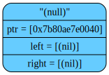
NODE DUMP called at source/tree.cpp:262:TreeLoadNode(): Created new node - "животное".
curPos = '("ловит мышей"("Полторашка"nilnil)("таракан"nilnil))("любит много спать"("занимается ИИ"("Вадим"nilnil)("Василий"nilnil))("Вова"nilnil)))'
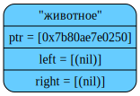
NODE DUMP called at source/tree.cpp:262:TreeLoadNode(): Created new node - "ловит мышей".
curPos = '("Полторашка"nilnil)("таракан"nilnil))("любит много спать"("занимается ИИ"("Вадим"nilnil)("Василий"nilnil))("Вова"nilnil)))'
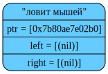
NODE DUMP called at source/tree.cpp:262:TreeLoadNode(): Created new node - "Полторашка".
curPos = 'nilnil)("таракан"nilnil))("любит много спать"("занимается ИИ"("Вадим"nilnil)("Василий"nilnil))("Вова"nilnil)))'
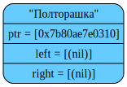
NODE DUMP called at source/tree.cpp:267:TreeLoadNode(): After creating left subtree.
curPos = '("таракан"nilnil))("любит много спать"("занимается ИИ"("Вадим"nilnil)("Василий"nilnil))("Вова"nilnil)))'

NODE DUMP called at source/tree.cpp:262:TreeLoadNode(): Created new node - "таракан".
curPos = 'nilnil))("любит много спать"("занимается ИИ"("Вадим"nilnil)("Василий"nilnil))("Вова"nilnil)))'

NODE DUMP called at source/tree.cpp:272:TreeLoadNode(): After creating right subtree.
curPos = ')("любит много спать"("занимается ИИ"("Вадим"nilnil)("Василий"nilnil))("Вова"nilnil)))'
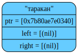
NODE DUMP called at source/tree.cpp:267:TreeLoadNode(): After creating left subtree.
curPos = '("любит много спать"("занимается ИИ"("Вадим"nilnil)("Василий"nilnil))("Вова"nilnil)))'
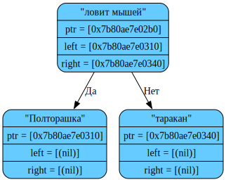
NODE DUMP called at source/tree.cpp:262:TreeLoadNode(): Created new node - "любит много спать".
curPos = '("занимается ИИ"("Вадим"nilnil)("Василий"nilnil))("Вова"nilnil)))'
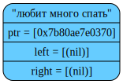
NODE DUMP called at source/tree.cpp:262:TreeLoadNode(): Created new node - "занимается ИИ".
curPos = '("Вадим"nilnil)("Василий"nilnil))("Вова"nilnil)))'
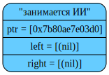
NODE DUMP called at source/tree.cpp:262:TreeLoadNode(): Created new node - "Вадим".
curPos = 'nilnil)("Василий"nilnil))("Вова"nilnil)))'
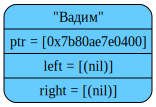
NODE DUMP called at source/tree.cpp:267:TreeLoadNode(): After creating left subtree.
curPos = '("Василий"nilnil))("Вова"nilnil)))'

NODE DUMP called at source/tree.cpp:262:TreeLoadNode(): Created new node - "Василий".
curPos = 'nilnil))("Вова"nilnil)))'
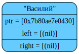
NODE DUMP called at source/tree.cpp:272:TreeLoadNode(): After creating right subtree.
curPos = ')("Вова"nilnil)))'

NODE DUMP called at source/tree.cpp:267:TreeLoadNode(): After creating left subtree.
curPos = '("Вова"nilnil)))'
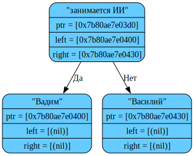
NODE DUMP called at source/tree.cpp:262:TreeLoadNode(): Created new node - "Вова".
curPos = 'nilnil)))'
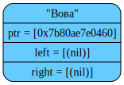
NODE DUMP called at source/tree.cpp:272:TreeLoadNode(): After creating right subtree.
curPos = '))'

NODE DUMP called at source/tree.cpp:272:TreeLoadNode(): After creating right subtree.
curPos = ')'
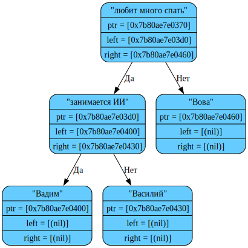
TREE DUMP called at source/main.cpp:33:main(): After loading from text file
&tree[0x7b50ad600030] initialized in {source/main.cpp:13}
tree->size = 0;
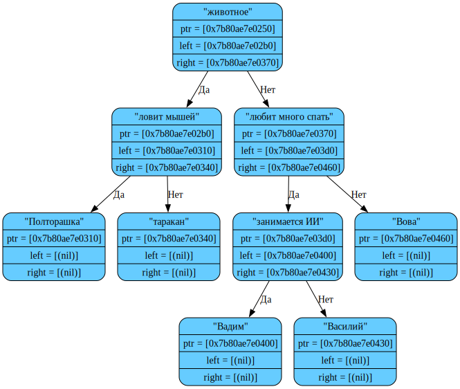